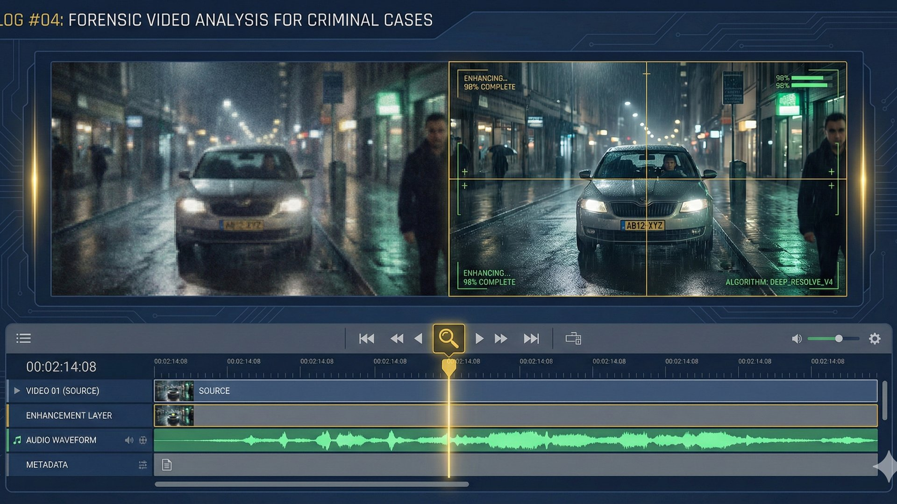
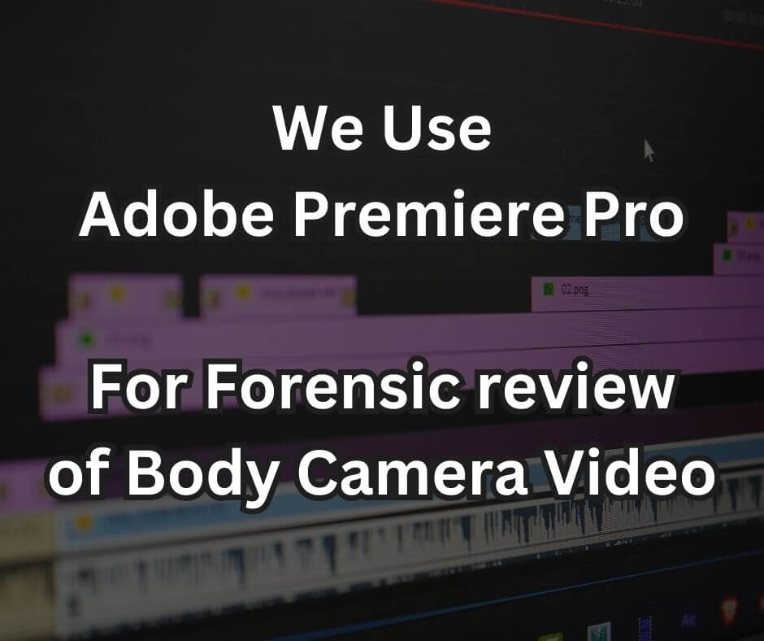

Lotter Law Leverages Forensic Video Analysis
Published on by Jeff Lotter

In today's world, video evidence plays an increasingly pivotal role in criminal cases. From police body cameras to storefront surveillance, footage can make or break a defense. However, simply viewing a video at face value is often not enough. Crucial details can be hidden in plain sight, obscured by poor quality, or missed in fast-moving events. At Lotter Law, we go beyond a superficial review, utilizing powerful tools like Adobe Premiere Pro to dissect video evidence and uncover the truth.

The Challenge with Raw Video Footage
Raw video footage, as it's often presented, can be deceptive. Issues like low lighting, shaky camera work, distance, or ambient noise can obscure vital information. The human eye, unaided, can easily miss split-second actions or misinterpret events. Relying on an initial, unenhanced viewing can lead to overlooking evidence that could be critical to your defense.
Adobe Premiere Pro: Our Analytical Edge
Adobe Premiere Pro is a professional-grade video editing and production software. While commonly used in filmmaking and content creation, its advanced capabilities are invaluable in a legal context. We leverage Premiere Pro to perform meticulous analysis, allowing us to:
- Achieve Precision Zoom & Cropping: We can magnify specific areas of the footage to identify minute details such as objects, facial expressions, or actions that might otherwise go unnoticed. This is done with an effort to maintain as much clarity as possible.
- Conduct Frame-by-Frame & Slow-Motion Playback: By slowing down the action or examining individual frames, we can deconstruct rapid sequences of events, understand precise timings, and catch fleeting moments that are imperceptible at normal speed. This is critical in assessing use-of-force incidents or fast-paced altercations.
- Enhance and Clarify Audio: Background noise, muffled speech, or faint sounds can often contain crucial information. Premiere Pro offers tools to isolate, reduce noise, and enhance audio tracks, potentially revealing spoken words, warnings, or other significant sounds that contextualize the visual evidence.
- Synchronize Multiple Video Angles: In cases with multiple camera sources (e.g., several body cameras and a dashcam), Premiere Pro allows us to sync these feeds accurately. This provides a comprehensive, multi-perspective view of an incident, which can be vital in piecing together the complete picture.
- Stabilize Shaky Footage: Unstable or shaky video can be difficult and disorienting to watch. We can apply stabilization techniques to make the footage clearer and easier to analyze, ensuring no detail is missed due to poor camera handling.
Uncovering Truth in Various Video Sources
Our expertise with Adobe Premiere Pro is applied across a wide range of video evidence types common in Florida criminal cases:
- Police Body Camera and Dash Camera Footage: This footage is central to many DUI arrests, resisting arrest charges, and other police-citizen encounters. We scrutinize it for adherence to protocol, the sequence of events leading to an arrest, officer conduct, and any inconsistencies between the video and official reports. Audio enhancement is often key in clarifying commands and responses.
- In-Store and Business Surveillance Video: Commonly used in theft, assault, or battery cases. We analyze this footage to clearly identify individuals, track their movements, understand the actions of all parties involved, and assess environmental factors that might have contributed to an incident. Zooming in on specific interactions or objects can be vital.
- Residential Surveillance (Ring, Nest, Arlo, etc.): These cameras increasingly capture neighborhood incidents, property crimes, or even provide evidence of a person's whereabouts (alibi). The wide-angle views and audio recordings can offer unique perspectives.
- Intersection and Traffic Cameras: Essential for accident investigations, red-light violations, or capturing hit-and-run incidents. Slow-motion analysis can help determine vehicle positioning, speed, and the sequence of a collision.
The Lotter Law Difference: Turning Pixels into Proof
Possessing advanced software is one thing; knowing how to wield it effectively to build a compelling legal defense is another. At Lotter Law, our commitment to a tech-forward, data-driven defense means we don't just accept video evidence at face value. Jeff Lotter's background and the firm's dedication to thorough investigation drive us to explore every angle. By meticulously analyzing video with tools like Adobe Premiere Pro, we can:
- Uncover exculpatory evidence missed by investigators.
- Identify inconsistencies in the prosecution's narrative.
- Challenge the interpretation of events presented by law enforcement.
- Provide clear, enhanced visual and audio evidence to support defense arguments.
Why This Meticulous Analysis Matters for Your Case
A detailed, professional analysis of video evidence can be a game-changer in your criminal case. It can lead to:
- Stronger Negotiation Power: Revealing flaws or new perspectives in video evidence can significantly improve our leverage when negotiating with the prosecution for reduced charges or a dismissal.
- Effective Motions to Suppress: If video analysis uncovers constitutional rights violations (e.g., an illegal search or lack of probable cause for a stop), it can form the basis of a motion to suppress crucial evidence.
- Compelling Trial Presentation: Enhanced video clips, slow-motion segments, or highlighted details can be powerfully persuasive for a judge or jury.
- A Path to a Better Outcome: Ultimately, uncovering the full truth within video evidence contributes to a fairer process and increases the chances of a favorable resolution to your case.
Is Video Evidence Part of Your Case?
If you are facing criminal charges in Florida and video evidence is involved – whether from police, a business, or a private citizen – don't assume that everything has been seen or properly understood. The details matter, and the right analysis can make all the difference.
Video forensics is just one component of our comprehensive data-driven defense approach, which includes case disposition analysis, officer pattern tracking, and prosecutorial tendency insights.
Contact Lotter Law today for a free and confidential consultation. Let us show you how our advanced video analysis capabilities, powered by tools like Adobe Premiere Pro and our commitment to in-depth investigation, can be a critical asset in your defense.